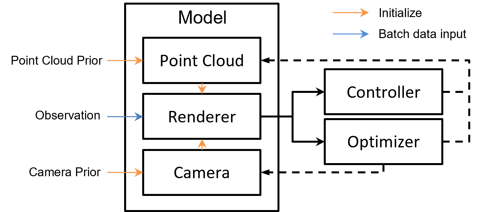

模型#
总览#
如下图所示，模型训练相关的由BaseModel、Controller和Optimizer构成。 其中BaseModel中包含了默认的Point Cloud Model 与 Camera Model，以及 Renderer.
BaseModel：提供了一种方便灵活的方式来组织训练过程、管理参数、定义计算，并利用PyTorch的自动微分能力。它与一个PointCloud模型和相机模型关联，这是优化的主要目标。并包含一个渲染器。
Optimizer：负责自动更新模型的参数,支持多优化器。
Controller：负责自动更新点云模型的结构。
以下是在Pointrix 训练中模型与优化器的交互过程：

其中左侧的 Point Cloud Prior，Observation 与 Camera Prior均为数据流水线传递来的数据。
模型#
模型主要由三部分组成，分别为：
点云模型：可优化的点云模型，用户可以通过注册可优化的属性来实现拓展，例如：
point_cloud = PointsCloud(cfg)
point_cloud.register_atribute('position', position)
point_cloud.register_atribute('rgb', rgb)
通过上面的代码，用户在每个点云上注册了’position’ 与 ‘rgb’ 属性。用户可以通过自定义属性来扩展 点云的特征。例如高斯点云包含’sh’, ‘scale’,’rotation’,’opacity’, ‘position’属性。
相机模型：主要包含qrots，tvecs，intrs这三个可优化的属性。即 旋转，平移与相机内参。后续会支持扩展自定义属性。
渲染器：主要包含原版高斯核，Gsplat, Msplat 的渲染器支持。通常如上图所示：渲染器在模型中读取对应视角的相机和点云数据，输出 对应的渲染结果。
优化器与控制器#
优化器负责模型参数的更新，控制器负责模型结构的更新（通常为点云模型）。
相关配置#
模型配置：#
trainer:
model:
name: BaseModel
lambda_ssim: 0.2
point_cloud:
point_cloud_type: "GaussianPointCloud"
max_sh_degree: 3
trainable: true
unwarp_prefix: "point_cloud"
initializer:
init_type: 'colmap'
feat_dim: 3
camera_model:
enable_training: False
renderer:
name: "MsplatRender"
render_depth: True
max_sh_degree: ${trainer.model.point_cloud.max_sh_degree}
name: 模型的名称，将由注册表查找。
lambda_dssim: SSIM损失的权重。
point_cloud
point_cloud_type: 点云的类型，’GaussianPointCloud’用于基于Gaussian Splatting的方法。
max_sh_degree: Pointrix中的最大SH阶数。
trainable: 点云模型是否可训练。
unwarp_prefix: 用于区分优化器中不同点云组的前缀,除非有多个点云的需求，否则不需要关心。
initializer
init_type: 点云的初始化方法，包括’colmap’和’random’。
feat_dim: 用于渲染RGB的点云的特征维度。
camera_model
enable_training: 是否开启相机优化
renderer
name: MSplat, GSplat 或原始高斯核，将由注册表索引。
max_sh_degree: 渲染器最大的 sh 阶数。
render_depth: 是否渲染深度
优化器配置：#
trainer:
optimizer:
optimizer_1:
type: BaseOptimizer
name: Adam
args:
eps: 1e-15
extra_cfg:
backward: False
params:
point_cloud.position:
lr: 0.00016
point_cloud.features:
lr: 0.0025
point_cloud.features_rest:
lr: 0.000125 # features/20
point_cloud.scaling:
lr: 0.005
point_cloud.rotation:
lr: 0.001
point_cloud.opacity:
lr: 0.05
optimizer_x: 第 x 个优化器，您可以添加任意数量的优化器，Pointrix 将自动处理它们。
type: 优化器的类型，由注册器索引。
name: 优化器的名称。
params：需要优化的参数名称以及对应的学习率。Pointrix将自动解析。如果您在Basemodel 基础上新加入了可学习的参数，请在这个配置中添加。
camera_params: 相机参数
lr: 相机参数的学习率，需要camera_model.enable_training==True